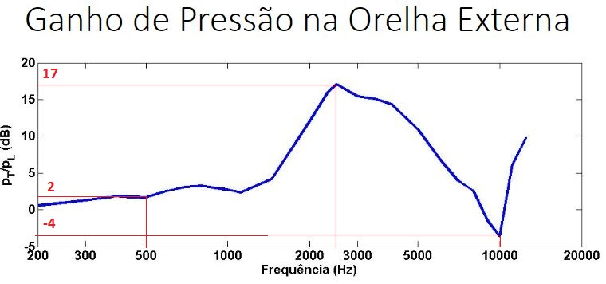
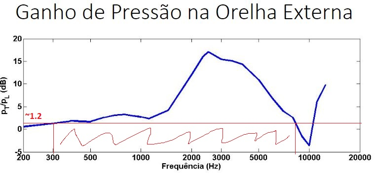

Sistema Auditivo Humano
1) Para um sinal padrão com pressão sonora pLpadrão de 10mPa incidente na Orelha, ou seja, aproximadamente 54 dB SPL:
a) Calcule a pressão sonora no tímpano em dB SPL e em pascais para sinal padrão harmônico (senoidal) de frequências 500 Hz, 2600 Hz e 10 kHz;
De acordo com as razões fornecidas pelo gráfico:

500Hz: pt/pl = 2 => pt = 2*pl => pt = 2*54 => pt = 108 dB SPL = 5.02 Pa
2600Hz: pt/pl = 17 => pt = 17*pl => pt = 17*54 => pt = 918 dB SPL = 1.59e+41 Pa
10 kHz: pt/pl = -4 => pt = -4*pl => pt = -4*54 => pt = -68 dB SPL = 7.96e-9 Pa
b) Se desejarmos a pressão no tímpano com pelo menos 64 dB SPL, qual a faixa de frequências devemos usar para varredura (“sweep”) do sinal padrão?
r = pt/pl => r = 64/54 =~ 1.2

De acordo com o gráfico, a faixa de frequências seria de aproximadamente:
300 - 9000 Hz
2) Quais são e qual a função dos “ossos” na orelha média?
Os ossos são Martelo, Bigorna e Estribo.
Realizam o acoplamento para que não haja perda de sinal na transição entre o ar e o líquido na transmissão do som para a orelha interna (cóclea).
3) O que é o efeito tonotópico na membrana basilar da orelha interna?
A pressão sonora transimita pelos ossos da orelha média deforma a membrana basilar em um local diferente dependendo da frequência sonora. As frequências mais altas agem na base da cóclea enquanto que as mais graves vibram a região apical. Fonte.
4) Como ocorre a conversão acústico-elétrica nas células ciliadas?
Cada célula ciliada possui centenas de estereocílios ligadas por 3 fiadas de tamanhos diferentes. A transmissão do som provoca um deslocamento nos espereocílos, abrindo os canais catiónicos e deixando entrar o potássio (K+) nos mesmo, despolarizando a célula ciliada. Fonte.
5) Explique quais são e como ocorrem os mascaramentos auditivos.
Na frequência:
- Sinais simultâneos. Mascaramento ocorre quando um sinal possui potência maior que o outro em determinada faixa de frequência.
- Sinal anterior mascara o sinal posterior.
- Sinal posterior mascara o sinal anterior.
6) Qual o mecanismo de identificação da localização da fonte sonora pelo sistema auditivo?
No plano horizontal:
- Diferença de tempo: O sinal sonoro chega ligeiramente mais rápido em um dos ouvidos, e essa diferença ajuda a identificar a direção.
- Diferença de intensidade causada pela cabeça: O sinal chega com intensidade menor no ouvido do lado oposto da cabeça.
- O espectro sonoro de um sinal vindo de cima é diferente de um sinal vindo de baixo por conta das reflexões causadas pelo corpo humano, como os ombros e o próprio pavilhão auditivo
7) Justifique o modelo de filtros triangulares com fator Q/Δf constante para o sistema auditivo humano.
Os filtros triangulares se justificam pois as observa-se uma não linearidade nas curvas psicoperceptivas, que têm formatos quase triangulares quando colocados na escala logaritmica.